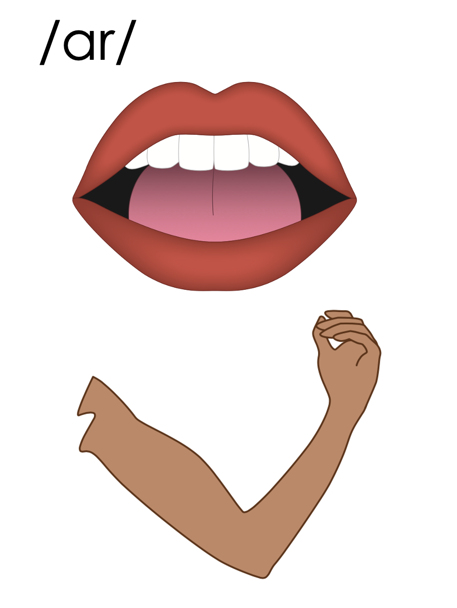
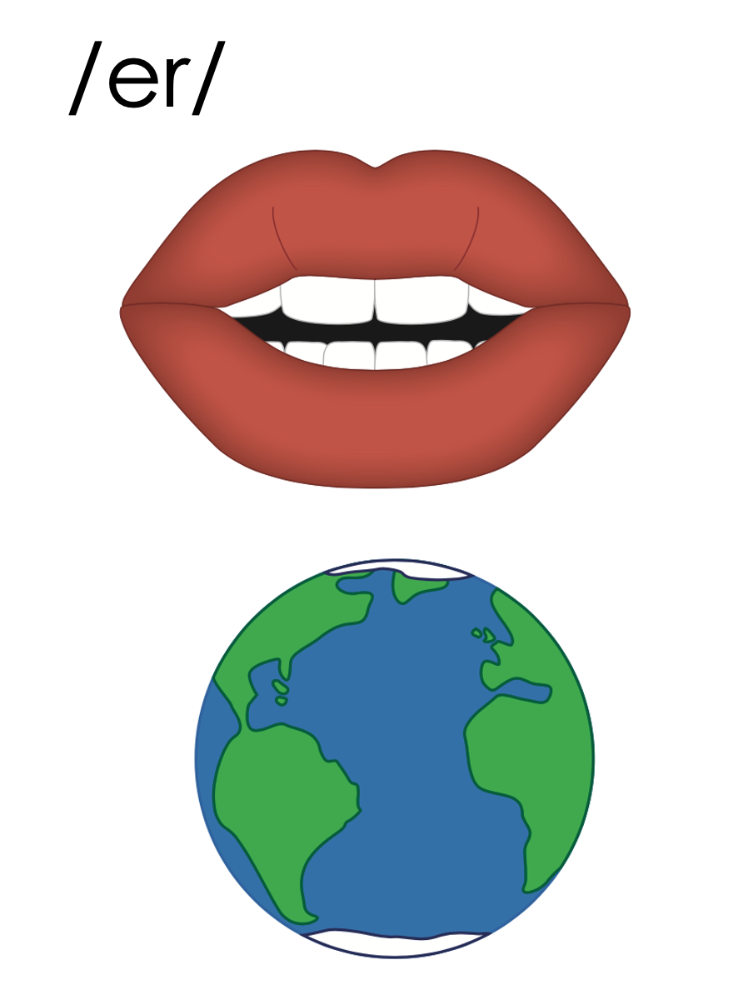
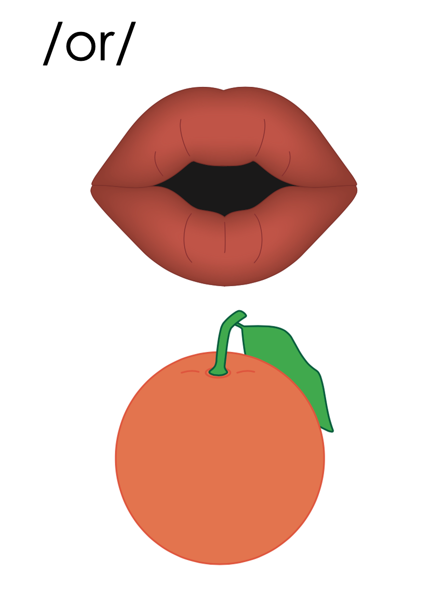
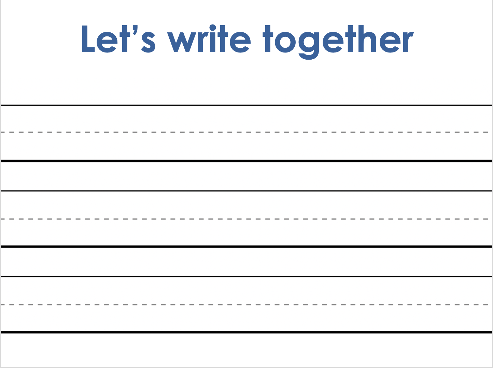

Lesson 111
-ar, -or /er/

ufliteracy.org


Lesson 111
-ar, -or /er/


See UFLI Foundations lesson plan Step 1 for phonemic awareness activity.


See UFLI Foundations lesson plan Step 2 for student phoneme responses.


-ed
y
er
e
t
s
kn
wr
mb
ou
ow
oi
oy
ea
au
aw
augh
ew
ui


See UFLI Foundations lesson plan Step 3 for auditory drill activity.

No slides needed for auditory drill.


See UFLI Foundations lesson plan Step 4 for blending drill word chain and grid.
Visit ufliteracy.org to access the Blending Board app.


See UFLI Foundations lesson plan Step 5 for recommended teacher language and activities to introduce the new concept.
ar

ar

dollar
1st syllable
2nd syllable
dollar
nectar
ar
ar
1st syllable
2nd syllable
upward
lizard
or

or
work
w
1st syllable
2nd syllable
doctor
author
or
er
ir
or
ar
ur

Handwriting paper for letter formation practice. Use as needed.
See UFLI Foundations manual for more information about letter formation.

dollar
doctor

nectar
collar
lizard
factor
flavor
tutor
author
visitor
similar

See UFLI Foundations lesson plan Step 5 for words to spell.
Handwriting paper to model spelling.

See UFLI Foundations lesson plan Step 5 for words to spell.
Handwriting paper for guided spelling practice.


Insert brief reinforcement activity and/or transition to next part of reading block.

Lesson 111
-ar, -or /er/

New Concept Review

See UFLI Foundations lesson plan Step 5 for recommended teacher language and activities to review the new concept.
ar
ar
dollar
1st syllable
2nd syllable
dollar
nectar
ar
ar
1st syllable
2nd syllable
upward
lizard
or
or
work
w
1st syllable
2nd syllable
doctor
author
or
er
ir
or
ar
ur
dollar
actor
solar
flavor


See UFLI Foundations lesson plan Step 6 for word work activity.
Visit ufliteracy.org to access the Word Work Mat apps.


See UFLI Foundations lesson plan Step 7 for irregular word activities.
The white rectangle under each word may be used in editing mode. Cover the heart and square icons then reveal them one at a time during instruction.

See UFLI Foundations manual for more information about reviewing irregular words.

build
Lesson 108+
UI represents the /ĭ/ sound.
The white rectangle under the word may be used in editing mode. Cover the heart and square icons then reveal them one at a time during instruction.
built
Lesson 108+
UI represents the /ĭ/ sound.
The white rectangle under the word may be used in editing mode. Cover the heart and square icons then reveal them one at a time during instruction.
sure
Lesson 109+
S represents the /sh/ sound.
Depending on dialect, U represents the /ū/ sound or UR represents the /er/ sound.
The final E is silent but does not follow the long vowel VCe pattern.
The white rectangle under the word may be used in editing mode. Cover the heart and square icons then reveal them one at a time during instruction.
laugh
Lesson 101+
AU represents the /ă/ sound.
GH represents the /f/ sound.
Alternatively, A represents the /ă/ sound, and UGH represents the /f/ sound.
The white rectangle under the word may be used in editing mode. Cover the heart and square icons then reveal them one at a time during instruction.
who
From Lesson 54 Introduction – review to introduce whom
WH represents the /h/ sound.
O represents the /ū/ sound.
The white rectangle under the word may be used in editing mode. Cover the heart and square icons then reveal them one at a time during instruction.
Handwriting paper for irregular word spelling practice. Use as needed.
See UFLI Foundations manual for more information about reviewing irregular words.
Teach
The orange star indicates these are new irregular words that need to be introduced.
See UFLI Foundations manual for more information about teaching irregular words.
whom
Lesson 111+
WH represents the /h/ sound.
O represents the /ū/ sound.
The white rectangle under the word may be used in editing mode. Cover the heart and square icons then reveal them one at a time during instruction.


See UFLI Foundations lesson plan Step 8 for connected text activities.
Who will the doctor help next?
To whom should I give this dollar?
The actor played the role of a powerful wizard.
See UFLI Foundations lesson plan Step 8 for sentences to write.

The UFLI Foundations decodable text is provided here. See UFLI Foundations decodable text guide for additional text options.
A Pet Lizard
Have you ever considered getting a pet lizard? They may seem like an unusual choice, but they can be lovely pets. Lizards are reptiles. They can be big or small and many different colors.
You can create a nice habitat for your lizard to live in. Start with a big cage so your lizard has room to roam. You will also need some food for your lizard. Lizards eat bugs and worms and plants. Some even like to eat flowers. Perhaps they like the flavor of the nectar inside the flowers.
Unlike dogs and cats, lizards do not need collars and do not need to be taken on walks. Just remember, if they ever get sick, take them to a doctor who can help them get better. So, what do you think? Would you want to have a pet lizard?

Insert brief reinforcement activity and/or transition to next part of reading block.